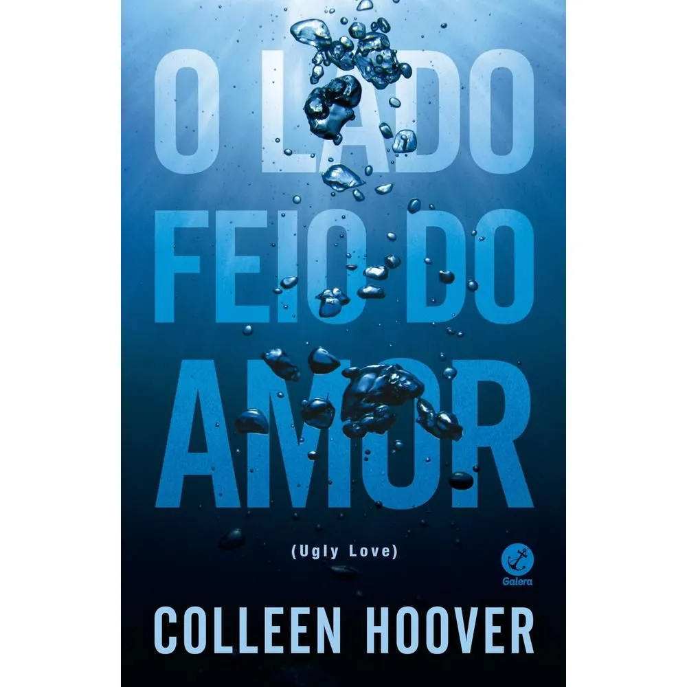
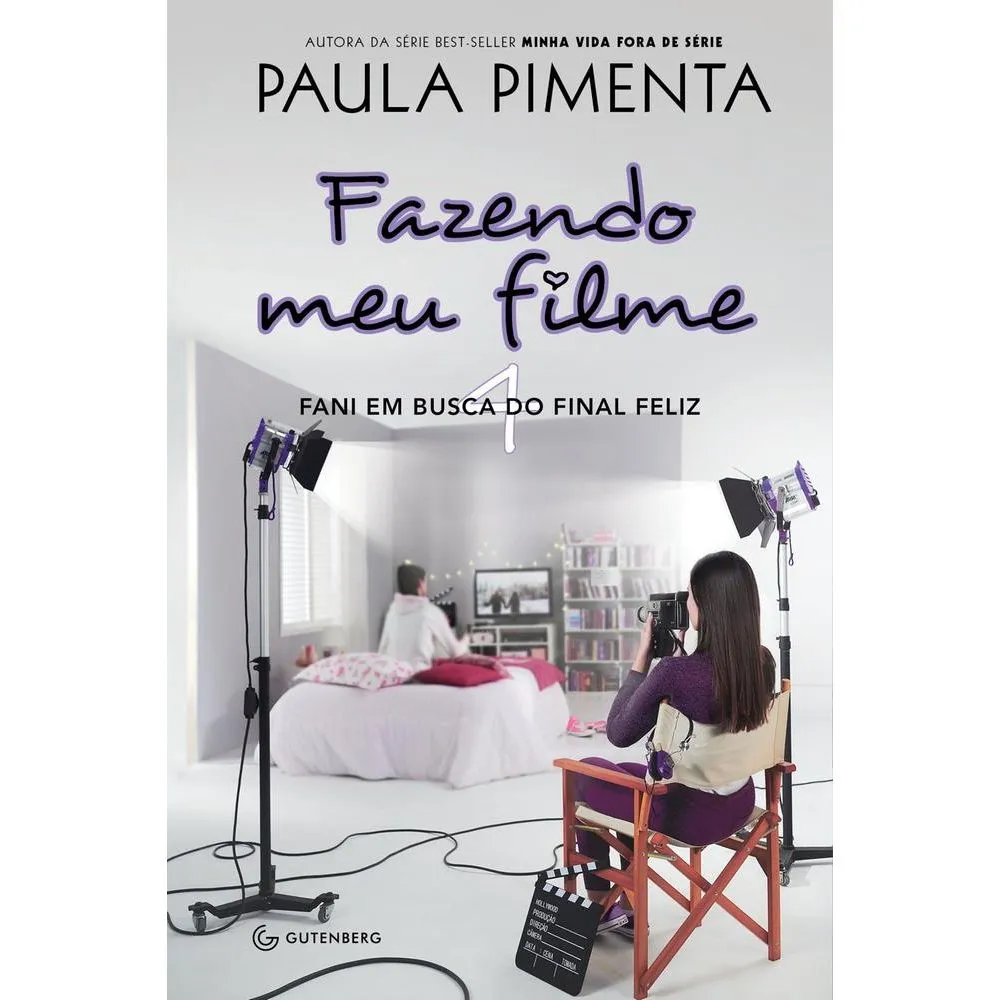
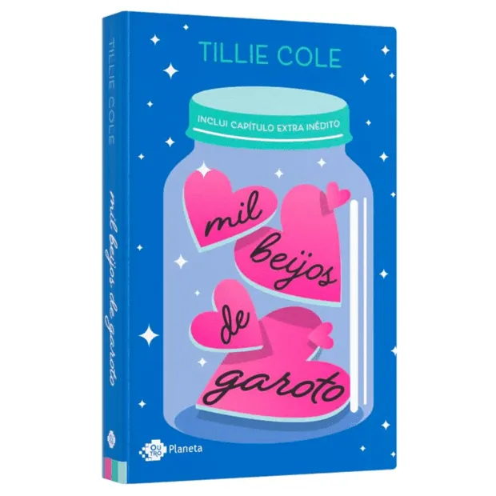
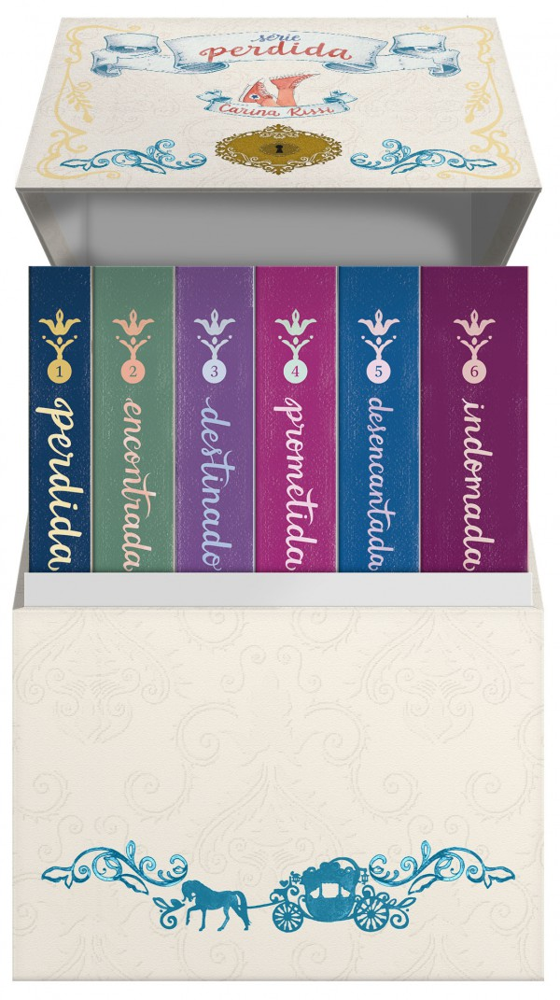
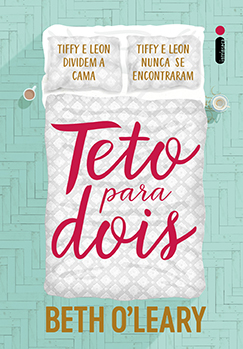
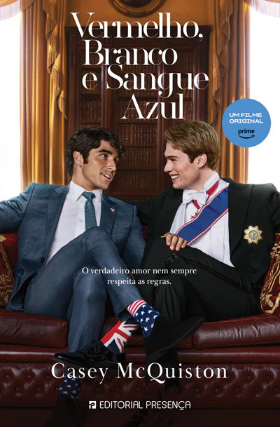
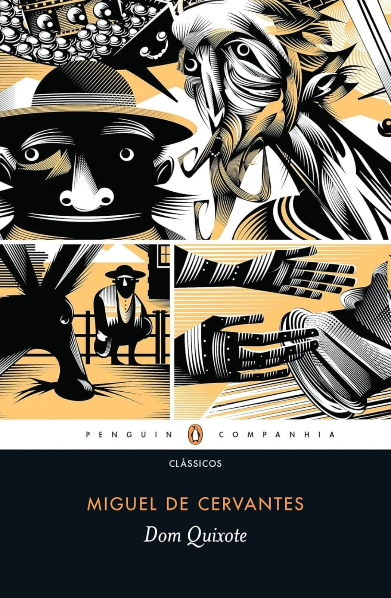
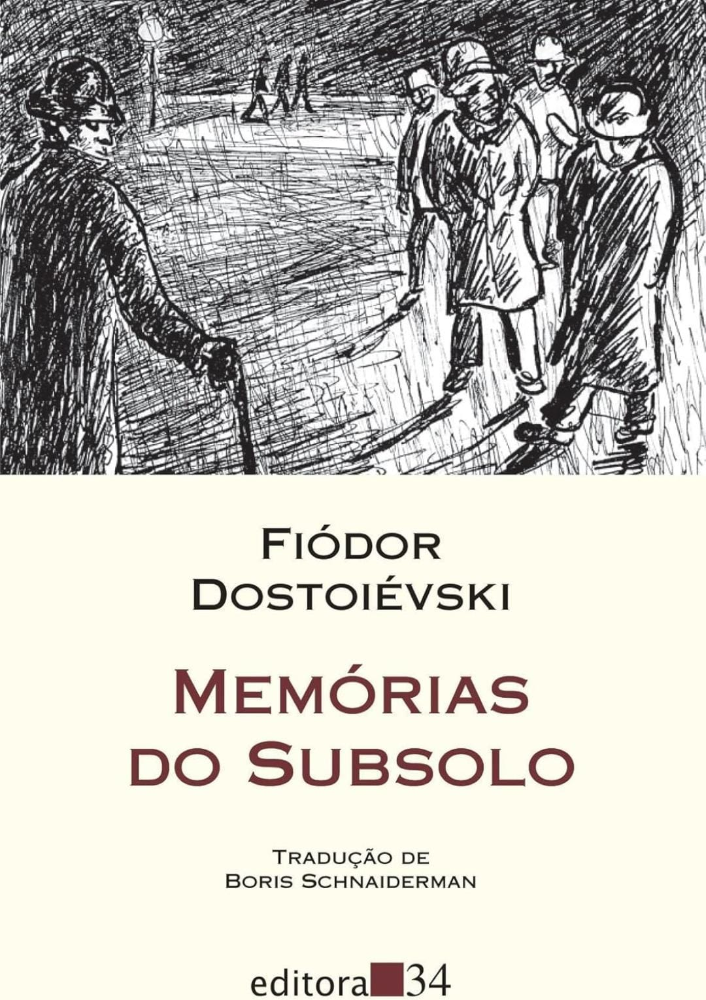
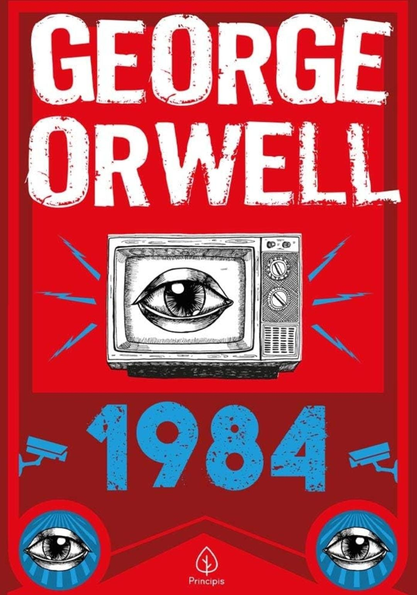

Acervo de Romances/Clássicos
Procure por título ou autor:
Grandes Romances

O Lado Feio do Amor
Sinopse curta: Tate Collins, uma enfermeira focada na carreira, aceita um acordo puramente físico com o piloto Miles Archer, que tem um passado sombrio. A única regra é não se apaixonar, mas eles logo descobrem que o coração não obedece a regras.
Ver Amostra Abrir ChatAtravés da Minha Janela
Sinopse curta: Raquel é secretamente apaixonada por seu vizinho misterioso, Ares, a quem ela observa pela janela. Quando Ares começa a usar o Wi-Fi dela sem permissão, um jogo de atração e obsessão se inicia, forçando os dois a saírem das sombras de suas janelas.
Ver Amostra Abrir Chat
Fazendo Meu Filme
Sinopse curta: Fani é uma adolescente apaixonada por cinema que vê sua vida virar de cabeça para baixo quando ganha a oportunidade de fazer um intercâmbio. Ela precisa lidar com as dúvidas de deixar para trás sua família, amigos e um novo amor inesperado, ou se aventurar em um mundo de novas possibilidades em outro país.
Ver Amostra Abrir Chat
Mil Beijos de Garoto
Sinopse curta: Rune e Poppy são amigos de infância que prometeram um ao outro um amor eterno. Quando Rune precisa se mudar, eles se separam. Anos depois, ele retorna, mas encontra uma Poppy silenciosa e que guarda um segredo doloroso, forçando-os a lutar para reencontrar o amor que um dia tiveram.
Ver Amostra Abrir Chat
Os Sete Maridos de Evelyn Hugo
Sinopse curta: A lendária e reclusa estrela de Hollywood, Evelyn Hugo, decide contar a verdade sobre sua vida glamorosa e escandalosa. Ela escolhe uma jornalista desconhecida para relatar sua jornada desde os anos 50 até sua ascensão à fama e, claro, a história por trás de cada um de seus sete casamentos.
Ver Amostra Abrir Chat
Perdida - Coleção
Sinopse curta: Sofia é uma garota moderna e viciada em tecnologia que, após comprar um celular novo, é misteriosamente transportada para o século XIX. Perdida no passado, ela é acolhida pela família do encantador Ian Clarke, enquanto tenta desesperadamente encontrar um caminho de volta para casa.
Ver Amostra Abrir Chat
Teto Para Dois
Sinopse curta: Para economizar, Tiffy e Leon dividem um apartamento (e uma cama), mas nunca se encontram: ele trabalha à noite e ela, de dia. A comunicação entre eles acontece apenas por post-its, e através dessas notas, eles se tornam amigos e talvez algo mais, sem nunca terem se visto.
Ver Amostra Abrir Chat
Vermelho, Branco e Sangue Azul
Sinopse curta: Alex, o filho da presidenta dos Estados Unidos, se envolve em uma confusão com o Príncipe Henry, da Inglaterra. Para evitar uma crise diplomática, eles são forçados a fingir uma amizade para as câmeras, mas o que começa como uma farsa logo se transforma em um romance secreto e arriscado que pode abalar as estruturas de duas nações.
Ver Amostra Abrir ChatClássicos Universais

Retrato de Dorian Gray
Sinopse curta: Romance filosófico onde narra a história de um jovem de beleza estonteante que, diante da pintura feita por um amigo artista, deseja preservar sua juventude para sempre, enquanto o retrato envelhece e revela a decadência de sua alma.
Ver Amostra Abrir Chat
Os Segredos Que Guardamos
Sinopse curta: Romance histórico que mistura ficção e fatos reais durante a Guerra Fria, retratando a missão da CIA para publicar um livro proibido na União Soviética.
Ver Amostra Abrir Chat
Crime e Castigo
Sinopse curta: Um romance psicológico e filosófico com Ródion Raskolnikov, um jovem ex-estudante vivendo na miséria em São Petersburgo. Convencido de que é capaz de grandes feitos, ele comete um duplo assassinato que desencadeia uma intensa luta interna entre sua razão e culpa. O livro explora profundas questões filosóficas, morais e sociais, envolvendo o dilema do crime e seu castigo, sem entregar os desdobramentos da trama
Ver Amostra Abrir Chat
O Idiota
Sinopse curta: Conta a história do príncipe Liév Míchkin, um homem de bondade quase infantil e visão pura, que retorna à Rússia após tratar sua epilepsia na Suíça. A narrativa explora a tensão entre sua pureza e o mundo marcado por hipocrisia, paixão e tragédia, deixando o leitor curioso sobre como essa figura tão singular sobreviverá nesse ambiente turbulento.
Ver Amostra Abrir Chat
O Conde de Monte Cristo
Sinopse curta: Conta a história de Edmond Dantès, um jovem marinheiro que é injustamente preso por uma conspiração. Ao escapar da prisão, ele encontra um tesouro que o transforma no misterioso Conde de Monte Cristo, usando sua fortuna e inteligência para elaborar uma vingança meticulosa contra todos que o traíram, explorando temas de justiça, poder e redenção sem revelar os detalhes finais da trama.
Ver Amostra Abrir Chat
Dom Quixote
Sinopse curta: Um cavalheiro sonhador embarca em uma jornada onde realidade e fantasia se entrelaçam, desafiando os limites da coragem e da loucura. Uma aventura que questiona o que é ser herói no mundo moderno.
Ver Amostra Abrir Chat
Os Miseráveis
Sinopse curta: História profunda e tocante de Jean Valjean, um homem que, após passar 19 anos preso por roubar um pão para alimentar sua família, busca redenção e enfrenta o preconceito da sociedade.A narrativa aborda temas intensos de pobreza, moralidade e esperança, com personagens inesquecíveis envolvidos em uma trama rica em emoções e história.
Ver Amostra Abrir Chat
Memórias do Subsolo
Sinopse curta: Memórias do Subsolo é um livro que revela a mente complicada e amargurada de um homem isolado, um narrador que vive à margem da sociedade e expõe suas profundas angústias. A obra mostra tanto sua introspecção psicológica intensa quanto episódios marcantes de sua vida que escancaram sua luta interna com a solidão e o sentimento de exclusão — tudo isso com uma escrita que provoca questionamentos sobre o comportamento e a essência humana sem revelar suas verdadeiras motivações ou desfechos.
Ver Amostra Abrir Chat
Gente Pobre
Sinopse curta: Primeiro romance de Dostoiévski, é um envolvente relato epistolar sobre a vida difícil e cheia de dignidade de dois personagens que enfrentam a pobreza em São Petersburgo do século XIX. Por meio das cartas trocadas entre Diévuchkin e Varvara, o leitor descobre uma história de afeto verdadeiro, solidariedade e os desafios sociais que expõem a vulnerabilidade e a sensibilidade humanas, sem revelar os detalhes do que acontece com eles na trama.
Ver Amostra Abrir Chat
De Quanta Tera Precisa um Homem?
Sinopse curta: Reúne histórias que exploram as complexidades da natureza humana, como a ambição desmedida, os limites da ganância e as verdadeiras necessidades da vida.
Ver Amostra Abrir Chat
A Revolução dos Bichos
Sinopse curta: Em uma granja onde os animais se cansam da exploração humana, uma revolução promete liberdade e igualdade. Mas, à medida que assumem o poder, começam a surgir tensões e dúvidas: será que todos realmente são iguais? Um despertar para as complexidades do poder e da corrupção, com finais que desafiam as expectativas.
Ver Amostra Abrir Chat
1984
Sinopse curta: Em um mundo onde o governo controla cada pensamento e até a verdade é manipulada, uma luta silenciosa pela liberdade começa a tomar forma. O que acontece quando a vigilância é total e a esperança parece impossível?.
Ver Amostra Abrir Chat